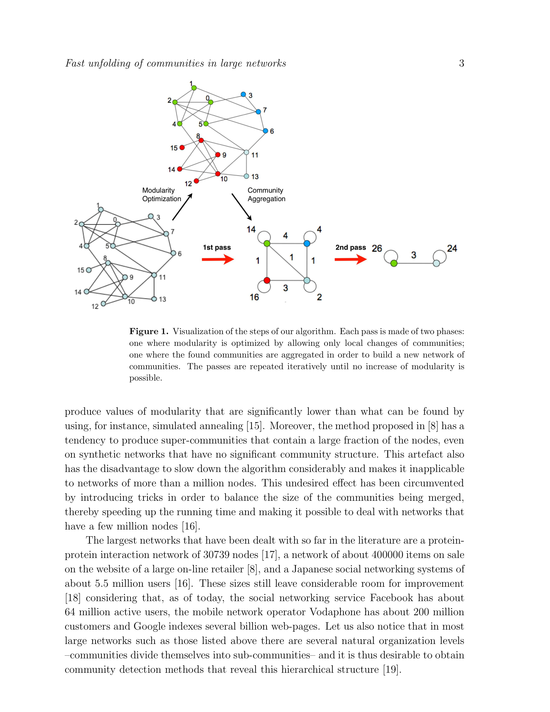

저자: Vincent D Blondel, Jean-Loup Guillaume, Renaud Lambiotte, Etienne Lefebvre | 날짜: 2008 | Journal: Journal of Statistical Mechanics: Theory and Experiment | DOI: 10.1088/1742-5468/2008/10/P10008" target="_blank">10.1088/1742-5468/2008/10/P10008 | arXiv: N/A

Figure 1
Louvain 알고리즘은 대규모 네트워크에서 커뮤니티를 빠르고 정확하게 탐지하는 방법이다. Blondel et al.(2008)이 제안한 이 알고리즘은 modularity를 국소적으로 탐욕적(greedy)으로 최적화하는 두 단계 절차를 반복하여, 1억 2,800만 엣지의 네트워크에서도 수분 내에 계층적 커뮤니티 구조를 탐지한다. 기존 방법 대비 수십~수백 배 빠른 속도를 달성하면서도 modularity 품질은 경쟁 알고리즘과 대등하거나 우월하다.
Figure 1
Figure 1: 논문 핵심 결과 또는 방법론 개요
| 항목 | 점수 |
|---|---|
| Novelty | 5/5 |
| Technical Soundness | 4/5 |
| Significance | 5/5 |
| Clarity | 5/5 |
| Overall | 5/5 |
총평: 대규모 네트워크에서 modularity를 탐욕적으로 최적화하는 Louvain 알고리즘을 제안하여 수억 엣지 규모 네트워크의 실용적 커뮤니티 탐지를 가능하게 한, 40,000회 이상 피인용된 네트워크 과학의 핵심 방법론 논문이다.